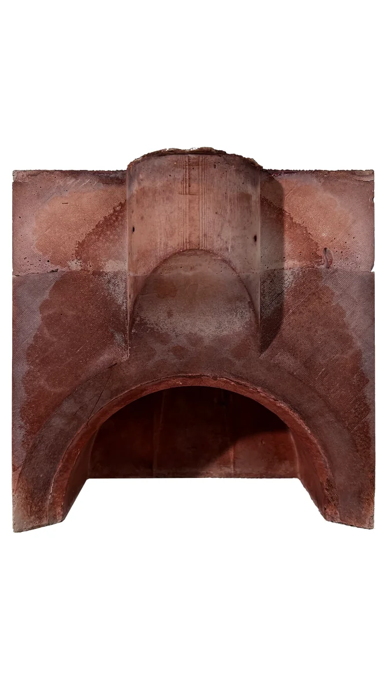
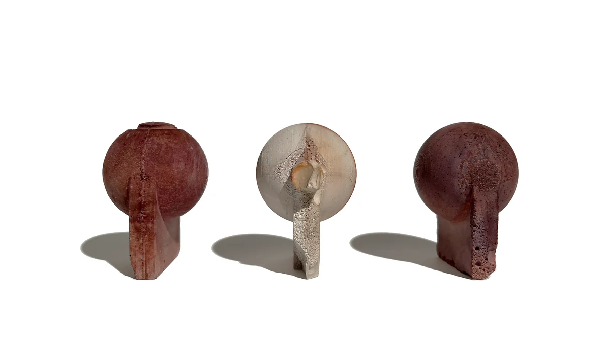

Infrastructural Public Cisterns

Render Photography 1.5
Post-processed rendering of the cistern site.

Render Photography 2 with Shadow
Second perspective render with emphasized shadows.
Project Diagrams
PDF compilation of conceptual and tectonic diagrams.

Enlarged Drawing
Detailed view of cistern assembly.

Floor Plan Iterations
Plan drawings comparing layout schemes.

Geological Diagram
Geological site section showing cistern location.

Site Context Image 1
Photo documenting material conditions at site.
Site Context Image 2
On-site photograph during early design phase.

Water Entry Elevation
Illustrates the entry sequence of the cistern.

Final Board Layout
Rendered final board showing full project presentation.

Section 1 Drawing
Final section drawing exported from InDesign.

Section 3 Drawing
Compositional study of sectional moments.